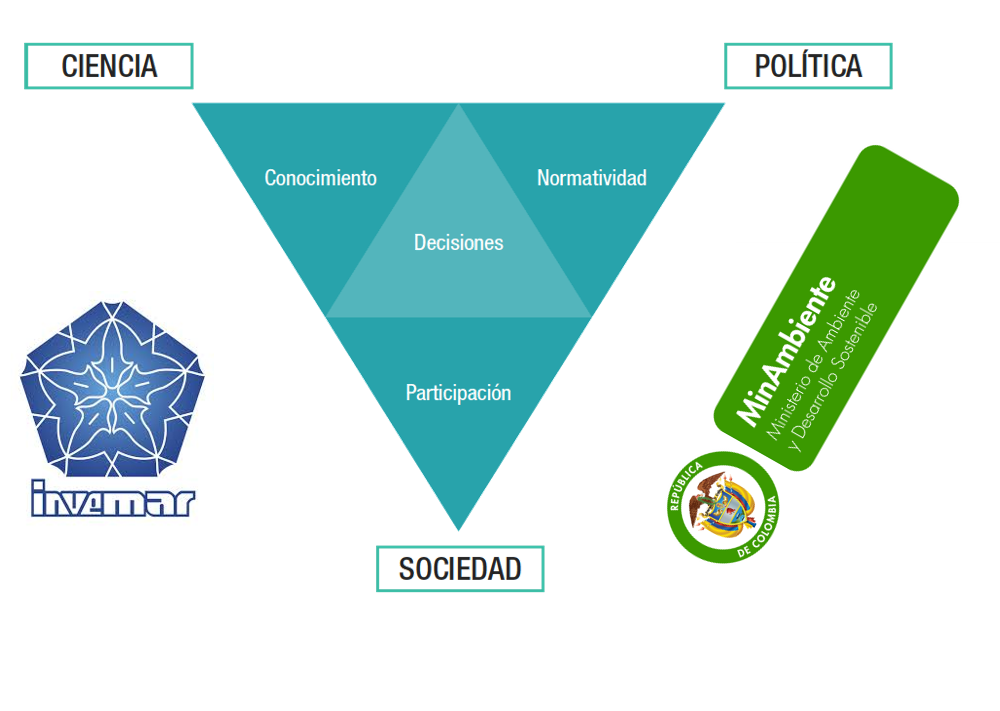
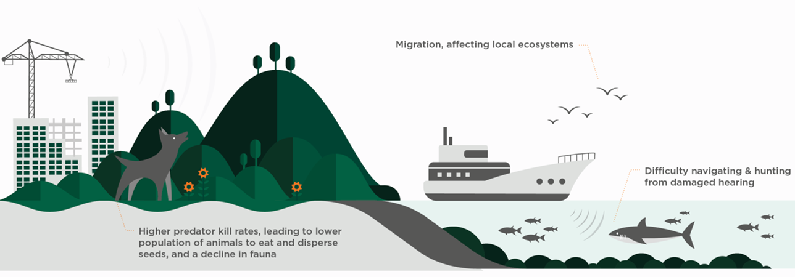

Bloque 1
Biofísica — Introducción al método científico
El método científico
Entender claramente el concepto del método científico es una de las necesidades más importantes de nuestra época. En la actualidad, la distinción entre lo real y lo verdadero se ha vuelto un reto. Las burbujas de auto-confirmación creadas por las redes sociales y potenciadas por la inteligencia artificial, nos distancian como comunidad ya que moldean nuestra percepción del mundo de una manera sesgada, casi del mismo modo en que se ajustan nuestros gustos por la música, las compras o las películas. La persona que está a tu lado, probablemente tiene una percepción completamente distinta de la realidad. Sus gustos, creencias y opiniones se han construido, con una fuerte influencia de algoritmos desarrollados para incrementar el consumo de bienes y experiencias. Estos algoritmos operan en un bucle de retroalimentación que prioriza lo que te gusta o lo que crees correcto, recompensándote constantemente con microdosis de dopamina. Sin saberlo, nos convertimos en adictos: a videos de gatitos, a memes, a comprar… pero, sobre todo, a que nos den la razón. ¿Crees poder diferenciar hechos de opiniones? sugerencia: El dilema de las redes sociales
Cuando las opiniones se presentan como hechos, se genera una confusión peligrosa. En este contexto, el método científico se convierte en una herramienta esencial: nos brinda una estratgegia para responder preguntas de la manera más objetiva posible, a partir de evidencia, intentando eliminar los sesgos y usando la curiosidad como motor principal.
Pasos del método científico:
- Paso 1: Observación y generación de la pregunta — Preguntas de si/no y preguntas acerca del fenómeno ¿cómo?, o ¿por qué?
- Paso 2: Formulación de hipótesis
- Paso 3: Experimentación
- Paso 4: Análisis de resultados para llegar a conclusiones verificables y reproducibles.
Conceptos fundamentales
| Concepto | Definición | Propósito | Ejemplo |
|---|---|---|---|
| Hipótesis | Una suposición o explicación provisional que puede ser probada mediante experimentación y análisis de datos. | Proponer una explicación tentativa para un fenómeno específico y probar si es correcta o no. | "Si aumenta la temperatura ambiente, aumentará la frecuencia respiratoria durante actividad física moderada." |
| Teoría | Una explicación generalizada y bien sustentada de un fenómeno, basada en pruebas repetidas y observaciones. | Explicar fenómenos relacionados de manera consistente, basada en evidencia experimental acumulada. | La teoría de la evolución: Explica cómo las especies cambian a lo largo del tiempo por selección natural. |
| Ley | Una descripción de un fenómeno natural que ocurre de manera constante bajo condiciones específicas. | Describir un fenómeno observable que siempre ocurre bajo las mismas condiciones. | La ley de la gravitación universal de Newton: Todos los objetos se atraen entre sí con una fuerza que depende de sus masas y la distancia entre ellos. |
Por esta razón, la expresión "es solo una teoría", no tiene sentido, las teorías se construyen a partir de evidencia proporsionada por la comprobación de una gran cantidad de hipótesis. La teoría de la relatividad, por ejemplo, ha sido comprobada experimentalmente por investigadores de todo el mundo y en incontables escenarios. Sus leyes y limitaciones son claramente conocidas.
Discusión acerca del método científico
Explicación detallada
Ejemplo: El método científico aplicado a la fisiología humana
- Observación: En un invernadero se observa que algunas plantas ornamentales pierden color y vigor durante semanas de calor intenso.
- Pregunta: ¿El aumento sostenido de la temperatura es la causa principal de esa pérdida de vigor?
- Hipótesis: Si la temperatura supera los 32 °C durante más de dos semanas, las plantas reducirán su contenido de clorofila y mostrarán marchitez visible.
- Experimentación: Se instalan sensores de temperatura y humedad, y se monitorean grupos de plantas durante 12 meses, registrando temperatura y porcentaje de hojas afectadas.
- Análisis: Se aplica un análisis de correlación entre temperatura y porcentaje de afectación. Si \( r > 0.7 \) y \( p < 0.05 \), se concluye que existe una asociación estadísticamente significativa.
El método científico en problemas ambientales y de salud
Al concluir este curso, la persona estará capacitada para enunciar, comprender, describir, analizar, utilizar y aplicar los principios y leyes fundamentales de la biofísica en sistemas biológicos complejos en contextos generales. Se fomentará el reconocimiento y valoración de la importancia de una argumentación sistemática y rigurosa, promoviendo la práctica de debates fundamentados en diversas situaciones. Además, se buscará el desarrollo de habilidades para entender, modelar y analizar procesos biofísicos en organismos, poblaciones y sistemas ambientales.
Gestión ambiental basada en evidencia
La gestión ambiental debe basarse en evidencia clara; por lo tanto, responder preguntas utilizando el método científico es fundamental. De lo contrario, las decisiones y la normatividad generadas estarán cargadas de especulación, lo que impedirá que tengan el impacto deseado.

En el contexto actual de impacto ambiental asociado a las actividades productivas humanas, conocer los fenómenos y comprender su impacto es crucial para tomar decisiones informadas y acertadas. En particular, entender los fenómenos físicos que causan dicho impacto posibilita discusiones objetivas y permite mitigar dichos impactos, permitiendo el diseño e implementación de nuevos métodos de producción sostenibles o regenerativos.

Ejercicio Resuelto: Diseñar un experimento usando el método científico
Problema: Se desea determinar si la temperatura del agua afecta la tasa de respiración de peces de una especie costera (Mugil cephalus). Diseñe un experimento completo aplicando los pasos del método científico.
Paso 1 — Observación y pregunta:
Entrenadores y personal de salud reportan que durante días más cálidos aumenta la frecuencia respiratoria en personas que realizan ejercicio moderado.
Pregunta: ¿La temperatura ambiente afecta significativamente la frecuencia respiratoria?
Paso 2 — Hipótesis:
\( H_0 \): La temperatura ambiente no tiene efecto significativo sobre la frecuencia respiratoria (\( \mu_{20°C} = \mu_{25°C} = \mu_{30°C} \)).
\( H_1 \): La frecuencia respiratoria aumenta significativamente con la temperatura ambiente (\( \mu_{20°C} < \mu_{25°C} < \mu_{30°C} \)).
Paso 3 — Diseño experimental:
- Variable independiente: Temperatura ambiente (20 °C, 25 °C, 30 °C).
- Variable dependiente: Frecuencia respiratoria (respiraciones/minuto).
- Variables controladas: Intensidad del ejercicio, duración de la prueba, hidratación previa, horario y estado de reposo inicial.
- Réplicas: 10 participantes por tratamiento (3 tratamientos × 10 réplicas = 30 individuos).
- Protocolo: Aclimatar a los participantes durante 20 minutos a cada condición. Registrar la frecuencia respiratoria durante 5 minutos de caminata estandarizada.
Paso 4 — Análisis de resultados:
Se aplica un análisis de varianza (ANOVA) de un factor para comparar las medias entre los tres grupos:
\[ F = \frac{\text{Varianza entre grupos}}{\text{Varianza dentro de los grupos}} = \frac{MS_{\text{entre}}}{MS_{\text{dentro}}} \]donde:
\[ MS_{\text{entre}} = \frac{SS_{\text{entre}}}{k - 1}, \qquad MS_{\text{dentro}} = \frac{SS_{\text{dentro}}}{N - k} \]con \( k = 3 \) grupos y \( N = 30 \) individuos totales.
Si el valor-\(p\) asociado al estadístico \( F \) es menor que el nivel de significancia \( \alpha = 0.05 \), se rechaza \( H_0 \) y se concluye que la temperatura tiene un efecto significativo sobre la frecuencia respiratoria.
Incertidumbre en las mediciones:
Cada medición de frecuencia respiratoria tiene una incertidumbre asociada. Si se realizan \( n \) mediciones repetidas, la incertidumbre estándar de la media se calcula como:
\[ u(\bar{x}) = \frac{s}{\sqrt{n}} \]donde \( s \) es la desviación estándar muestral y \( n \) el número de mediciones. El resultado se reporta como \( \bar{x} \pm u(\bar{x}) \) movimientos/min.
Conclusión esperada:
Si \( F_{\text{calculado}} > F_{\text{crítico}} \) (o equivalentemente \( p < 0.05 \)), se confirma que la temperatura ambiente afecta significativamente la frecuencia respiratoria, apoyando la hipótesis alternativa \( H_1 \).